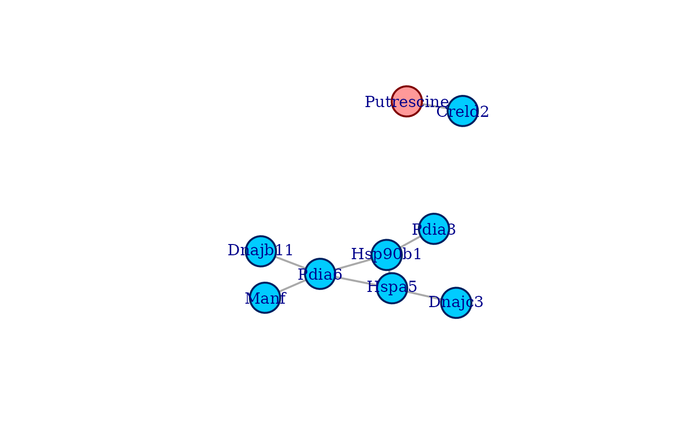

Introduction
This vignette illustrates the basic usage of the coglasso package to reconstruct a multi-omics network. The package implements and R interface to collaborative graphical lasso, a network estimation algorithm based on graphical lasso (Friedman, Hastie and Tibshirani, 2008) and collaborative regression (Gross and Tibshirani, 2015)
Let us first attach coglasso.
We then choose the multi-omics data set to use. The coglasso package
offers three alternative version of a transcriptomics and metabolomics
data set. We will use multi_omics_sd_small. For further
explanation about all the multi-omics data sets see
help(multi_omics_sd).
colnames(multi_omics_sd_small)
#> [1] "Cirbp" "Hspa5" "P4ha1" "Spred1" "Creld2"
#> [6] "Pdia6" "Hsp90b1" "Hsph1" "Manf" "Pdia3"
#> [11] "Dnajb11" "Dnajc3" "BC004004" "Stip1" "Phe"
#> [16] "Trp" "Putrescine" "PC aa C36:3" "PC ae C32:2"
nrow(multi_omics_sd_small)
#> [1] 30This smaller version of multi_omics_sd has 19 variables,
14 genes and 5 metabolites, and 30 samples. We can directly proceed with
network reconstruction.
Multi-omics network reconstruction
Our objective is to reconstruct a network from this data set using
collaborative graphical lasso. To do so with the coglasso
package, we mainly call two functions. First, we use
coglasso() to estimate a network for every combination of
hyperparameters we want to explore. Following this, we call
stars_coglasso() to select the best combination of
hyperparameters using stability selection.
The usual application of coglasso() requires to give an
input data set to the argument data, the number of
variables of the the first type to pX, and hyperparameter
settings. Collaborative graphical lasso has three hyperparameters: \(λ_w\), penalizing “within” same-type
interactions, \(λ_b\) penalizing
“between” different-type interactions, and \(c\), the weight of the collaborative term.
In this vignette we choose to explore 15 possible penalty values for
both “within” and “between” penalties, and three possible collaboration
values. We do so by setting both nlambda_w and
nlambda_b to 15, and by setting nc to 3. We
also decide to restrict our search to a less extreme penalization, by
setting a fixed maximum value for both penalties to 0.85, while by
default it is often estimated to a higher value with a data-driven
approach. Nevertheless, we also decide to focus our search to the sparse
side of possible networks. We achieve this by setting to a fixed value
the ratios between the smallest (least penalizing) and the largest (most
penalizing) penalty explored. While the default value of these
parameters is 0.1, we decide to set the minimum ratio to 0.6 for \(λ_w\) and to 0.4 for \(λ_b\). For further explanation on other
arguments of coglasso() and how to use them, please see
help(coglasso).
cg <- coglasso(multi_omics_sd_small,
pX = 14,
nlambda_w = 15,
nlambda_b = 15,
nc = 3,
lambda_w_max = 0.85,
lambda_b_max = 0.85,
lambda_w_min_ratio = 0.6,
lambda_b_min_ratio = 0.4,
verbose = FALSE
)
# To see the explored paramaters:
cg$lambda_w
#> [1] 0.8500000 0.8195446 0.7901804 0.7618683 0.7345706 0.7082511 0.6828745
#> [8] 0.6584072 0.6348165 0.6120711 0.5901407 0.5689960 0.5486089 0.5289523
#> [15] 0.5100000
cg$lambda_b
#> [1] 0.8500000 0.7961495 0.7457107 0.6984673 0.6542169 0.6127700 0.5739489
#> [8] 0.5375872 0.5035292 0.4716288 0.4417495 0.4137631 0.3875498 0.3629971
#> [15] 0.3400000
cg$c
#> [1] 10.000000 3.162278 1.000000To select the best combination of hyperparameters, we will use
stars_coglasso(). This function implements a
coglasso-adapted version of StARS, the stability selection
method developed by Liu, Roeder and Wasserman (2010).
The usual application of stars_coglasso() uses the default
options of the function, whose only required input is the object
resulting from coglasso().
sel_cg <- stars_coglasso(cg, verbose = FALSE)
# To see the selected parameters:
sel_cg$sel_lambda_w
#> [1] 0.85
sel_cg$sel_lambda_b
#> [1] 0.5739489
sel_cg$sel_c
#> [1] 10With this we have selected the combination of hyperparameters
yielding the most stable, yet sparse coglasso network. The adjacency
matrix of the selected network is stored in the object
sel_cg$sel_adj. We can use this matrix to display the
selected network with the R package igraph.
# To create the igraph object from the selected adjacency matrix:
sel_graph <- igraph::graph.adjacency(sel_cg$sel_adj, mode = "undirected")
#> Warning: `graph.adjacency()` was deprecated in igraph 2.0.0.
#> ℹ Please use `graph_from_adjacency_matrix()` instead.
#> This warning is displayed once every 8 hours.
#> Call `lifecycle::last_lifecycle_warnings()` to see where this warning was
#> generated.
# Setting some graphical parameters and removing disconnected nodes from the graph
igraph::V(sel_graph)$label <- colnames(multi_omics_sd_small)
igraph::V(sel_graph)$color <- c(rep("#00ccff", 14), rep("#ff9999", 5))
igraph::V(sel_graph)$frame.color <- c(rep("#002060", 14), rep("#800000", 5))
igraph::V(sel_graph)$frame.width <- 2
igraph::V(sel_graph)$size <- c(30)
igraph::E(sel_graph)$width <- 2
lo <- igraph::layout_with_fr(sel_graph)
diconnected <- which(igraph::degree(sel_graph) == 0)
sel_graph2 <- igraph::delete.vertices(sel_graph, diconnected)
#> Warning: `delete.vertices()` was deprecated in igraph 2.0.0.
#> ℹ Please use `delete_vertices()` instead.
#> This warning is displayed once every 8 hours.
#> Call `lifecycle::last_lifecycle_warnings()` to see where this warning was
#> generated.
lo2 <- lo[-diconnected, ]
# Plotting
plot(sel_graph2, layout = lo2)
References
Friedman, J., Hastie, T., & Tibshirani, R. (2008). Sparse inverse covariance estimation with the graphical lasso. Biostatistics, 9(3), 432–441. https://doi.org/10.1093/biostatistics/kxm045
Gross, S. M., & Tibshirani, R. (2015). Collaborative regression. Biostatistics, 16(2), 326–338. https://doi.org/10.1093/biostatistics/kxu047
Liu, H., Roeder, K., & Wasserman, L. (2010). Stability Approach to Regularization Selection (StARS) for High Dimensional Graphical Models (arXiv:1006.3316). arXiv. https://doi.org/10.48550/arXiv.1006.3316